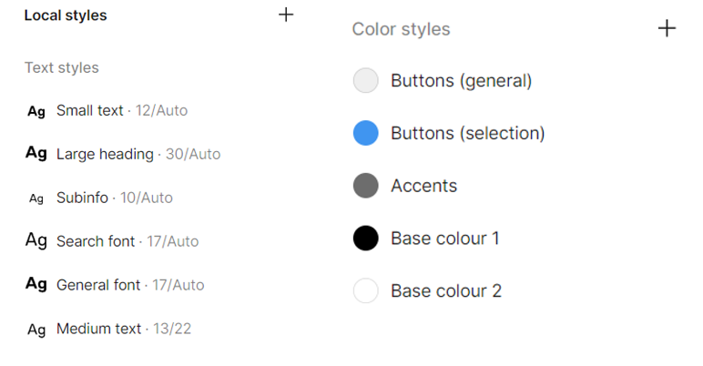

UI/UX CASE STUDY: INSTAGRAM
REDESIGN
REDESIGN
Project Context
What is the case study objective?
Instagram is a popular photo and video social media app. Analyze the current Instagram app and develop a refreshed design.
Instagram is a popular photo and video social media app. Analyze the current Instagram app and develop a refreshed design.
The Process
1. Empathize
Primary and secondary
research, heuristic
evaluation, problem
statement.
2. Conceptualize
Wireframing low-
fidelity sketches
and user flow.
3. Prototype
Prototyping on
Figma and getting
user feedback.
Initial Research
What we wanted to learn?
Before I started defining my problem I researched online on various platforms to see common pain points for Instagram users including Quora, Reddit, blogs, etc. Most feedback I saw led back to a common issue that Instagram’s content is not filtered well:
Before I started defining my problem I researched online on various platforms to see common pain points for Instagram users including Quora, Reddit, blogs, etc. Most feedback I saw led back to a common issue that Instagram’s content is not filtered well:
Heuristic Evaluation
Regarding the interface design, I conducted a heuristic
evaluation based on Jakob Nielson’s principles. Instagram
performed poorly on:
a) Consistency and standards
• Certain icons are redundant and the same icon can be used for different functions
b) Flexibility and efficiency
• Users are limited in what they can do during the process of posting and editing posted content
a) Consistency and standards
• Certain icons are redundant and the same icon can be used for different functions
b) Flexibility and efficiency
• Users are limited in what they can do during the process of posting and editing posted content
Project Context
What was the interview method?
I carried out a semi-structured interview approach to be able to gather both specific answers that I could extrapolate into data, as well as dive into their own thoughts about the app through open-ended discussions. I conducted 1-on-1 informal interviews with 5 Instagram users aged 18-20, with an average daily usage of 1.8 hours.
Interview Takeways (x/5 mentioned)
• Enhance the algorithm for content recommendations such as interest-based channels or curated collections.
• Integrate more advanced photo and video editing features directly into the app.
• Integrate more easy to use modes/features that help users manage their screen time, such as usage summaries, time limits, and gentle reminders to take breaks.
I carried out a semi-structured interview approach to be able to gather both specific answers that I could extrapolate into data, as well as dive into their own thoughts about the app through open-ended discussions. I conducted 1-on-1 informal interviews with 5 Instagram users aged 18-20, with an average daily usage of 1.8 hours.
Interview Takeways (x/5 mentioned)
• Enhance the algorithm for content recommendations such as interest-based channels or curated collections.
• Integrate more advanced photo and video editing features directly into the app.
• Integrate more easy to use modes/features that help users manage their screen time, such as usage summaries, time limits, and gentle reminders to take breaks.
Personas
It should be noted that these user personas were developed based
on research and interviews conducted which focuses on the age
group 18-24, thus, my personas also fall in this demographic in
order for an accurate depiction. For future iteration of this
project the interviewee selection would account for other age
demographics to ensure that the design is reflective of the
majority of users.
Wireframing
I created many low-fidelity sketches for the pages and the
features I wanted to change or implement. Through tracking the
user flow I identified the pages involved for the redesign
regarding the project objectives. Due to time constraints, I
focused on completing two out of the three objectives.
1. Categorizing the
Explore Content
Discovery/Display
Explore Content
Discovery/Display
I took inspiration from other apps such as Pinterest, Reddit,
Twitter, that would ask you to select topics of interests to show
you on your feed. With users starting on the explore page, I drew
three designs, settling on C as it was the most straightforward/
efficient layout which made it visually appealing due to its
simplicity.
Design Decision: Explore Page


User Flow
How to see/change a user’s category feed page?
After the user clicks on a category bubble it brings them to that category feed page. To add a new category, click the search bar at the top. This opens up a page split up between account and categories. The account side operates the same as the current Instagram search bar. The categories side will let users to see the categories they are following and pinned (pinned ones appear on the top of the category feed page).
After the user clicks on a category bubble it brings them to that category feed page. To add a new category, click the search bar at the top. This opens up a page split up between account and categories. The account side operates the same as the current Instagram search bar. The categories side will let users to see the categories they are following and pinned (pinned ones appear on the top of the category feed page).

2. Adding Post
Editing Features
Editing Features
Starting from the current Instagram’s New Post Page, I added an
additional feature: A preview button.
User Flow
How to preview post?
The preview button is at the top of the New Post bar. The button is placed at the top and near the photo carousel based on design heuristic of placing related elements close together. It avoids being placed at the bottom to prevent users from accidentally clicking the “Share” button when trying to preview.
The preview button is at the top of the New Post bar. The button is placed at the top and near the photo carousel based on design heuristic of placing related elements close together. It avoids being placed at the bottom to prevent users from accidentally clicking the “Share” button when trying to preview.
Typography,
Colour Palette
Colour Palette
Following UI/UX standards for a consistent and cohesive
interface, I used the same typography and colour palette from the
the current Instagram app. Additionally, I did not make any
additional design changes to styles as during user research all
users rated the current interface high. Stemming from this point,
the new designed features utilized rounded buttons and
interactive components for clicking and horizontal swiping.

Usability Testing
What was the interview method?
I instructed 5 users to carry out a certain task and asked them to narrate their thoughts and actions. I recorded these and noticed any areas of struggle as well as feedback on the new incorporated functions.
Here is where challenges arose. Due to the time constraints, I only provided them with a Figma prototype, however, sometimes the user would be confused on what they press, or if they didn’t press directly on the button nothing would happen. In these instances I had to provide some clarification and choose to categorize this challenge as either a Figma challenge or as a redesign challenge to not skew my results.
Testing Takeaways
• The interest-based channel following system works well, and is something users expected to have
• It was unclear to users that the category bubble can be pressed again to bring use back to the Explore page
• The preview button function was rated favourably
Overall, the design was able to address a few user pain points including content overload, and posting features.
I instructed 5 users to carry out a certain task and asked them to narrate their thoughts and actions. I recorded these and noticed any areas of struggle as well as feedback on the new incorporated functions.
Here is where challenges arose. Due to the time constraints, I only provided them with a Figma prototype, however, sometimes the user would be confused on what they press, or if they didn’t press directly on the button nothing would happen. In these instances I had to provide some clarification and choose to categorize this challenge as either a Figma challenge or as a redesign challenge to not skew my results.
Testing Takeaways
• The interest-based channel following system works well, and is something users expected to have
• It was unclear to users that the category bubble can be pressed again to bring use back to the Explore page
• The preview button function was rated favourably
Overall, the design was able to address a few user pain points including content overload, and posting features.